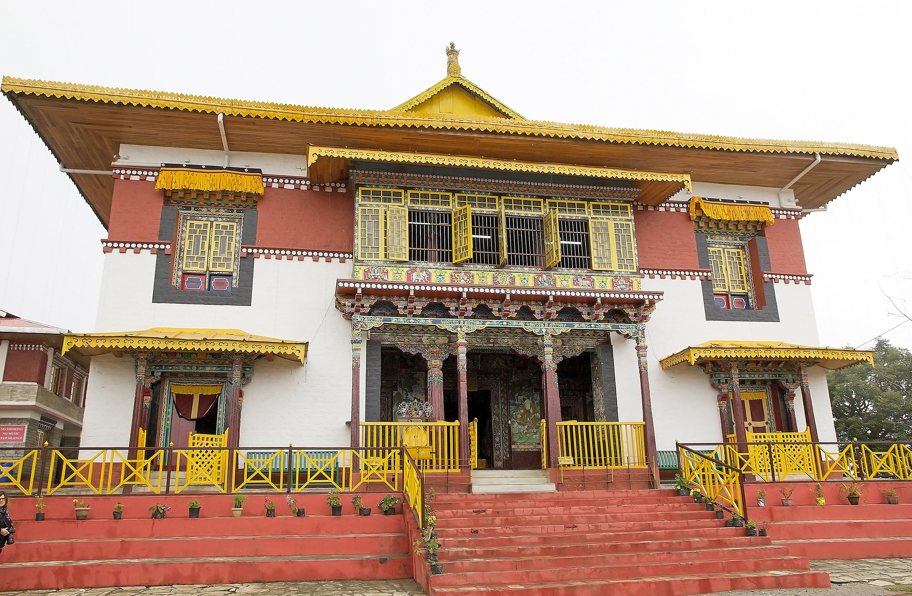

Explore the Mystical Monasteries of Sikkim
Monastery360 is your gateway to the rich cultural and spiritual heritage of Sikkim's ancient monasteries.
Start Your JourneyVirtual Tours
Immerse yourself in 360° panoramic views of stunning monastery interiors and their breathtaking surroundings. Narrated walkthroughs are available in multiple languages to enrich your experience.
Rumtek Monastery

Pemayangtse Monastery
Interactive Map
Discover the locations of over 200 monasteries on our geo-tagged map. Plan your travel routes and find nearby attractions with ease.
Below are some of the prominent monasteries featured on the map:
- Rumtek Monastery: One of the largest monasteries in Sikkim, located near Gangtok.
- Pemayangtse Monastery: An ancient and historically significant monastery in West Sikkim.
- Enchey Monastery: A secluded monastery dating to 1908, situated on a hill above Gangtok.
- Dubdi Monastery: Considered one of the oldest monasteries in Sikkim, established in 1701.
Digital Archives
Explore a vast collection of scanned manuscripts, intricate murals, and historical documents. Our AI-powered search helps you find exactly what you're looking for.
Cultural Calendar
Experience the vibrant festivals and sacred rituals of Sikkim firsthand. From the lively masked dances to solemn ceremonies, these events offer a glimpse into the heart of Buddhist culture.
Monks perform a Cham dance, a ritual to ward off evil spirits.
Colorful costumes and masks worn during monastery festivals.
Traditional music and instruments are a key part of the rituals.
Crowds gather to watch the sacred and festive dances.
Processions are an integral part of many Sikkimese festivals.
Prayer flags adorn the monasteries during major events.